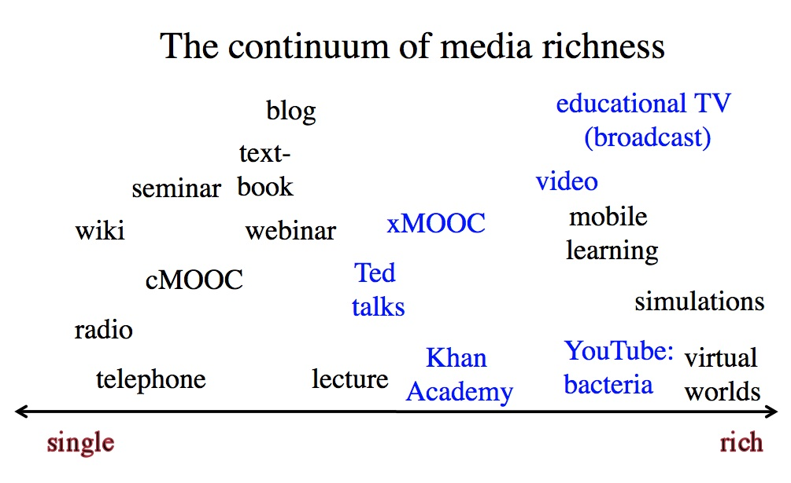

7.7 Riqueza das mídias


7.7.1 O desenvolvimento histórico da riqueza das mídias
Na Seção 7.2, "Uma breve história da tecnologia educacional", descreveu-se o desenvolvimento de diferentes mídias na educação, começando pelo ensino e aprendizagem por via oral, transitando para a comunicação escrita ou textual, posteriormente para o vídeo e, por fim, para a computação. Cada um destes meios de comunicação fez-se acompanhar, habitualmente, por um acréscimo na riqueza da mídia, em termos do número de sentidos e de capacidades interpretativas necessários para processar a informação.
Outra forma de definir a riqueza das mídias baseia-se nos sistemas de símbolos empregados para comunicar através do meio. Assim, o material textual incorporou, desde cedo, recursos gráficos e desenhos, além das palavras. A televisão ou o vídeo integram o áudio, bem como imagens estáticas e em movimento. A computação consegue agora incorporar texto, áudio, vídeo, animações, simulações, computação e redes, tudo por meio da internet.
7.7.2 O continuum da riqueza das mídias



Verifica-se, por conseguinte, mais um continuum em termos da riqueza das mídias, como ilustrado na Figura 7.7.2 acima. E, do mesmo modo, o planejamento de uma determinada mídia pode influenciar a sua posição no continuum. Por exemplo, na Figura 7.7.2, representam-se a azul diferentes formas de ensino com a utilização de vídeo. As palestras do TED Talks, uma aula expositiva televisiva e, com frequência, os xMOOCs constituem normalmente depoimentos estáticos (talking heads). A Khan Academy utiliza recursos gráficos dinâmicos complementados por comentários em voz-off, e o vídeo de YouTube de MrExham sobre células procarióticas utiliza recursos gráficos coloridos e animações, bem como comentários em formato de depoimento em vídeo. As transmissões de televisão educativa tendem a utilizar uma gama ainda mais ampla de técnicas de vídeo.
No entanto, embora a riqueza do vídeo possa ser aumentada ou diminuída em função da sua utilização, o vídeo situar-se-á sempre como uma mídia mais rica do que o rádio ou os livros didáticos. O rádio nunca constituirá uma mídia rica em termos dos seus sistemas de símbolos, uma vez que depende de um único meio, o áudio; mesmo um vídeo baseado apenas em depoimentos em plano fixo revela-se simbolicamente mais rico do que o rádio.
Não se trata de um juízo de valor ou normativo. O rádio pode revelar-se "rico" no sentido de explorar plenamente as características ou sistemas de símbolos do meio. Um programa de rádio bem produzido tem maior probabilidade de ser pedagogicamente eficaz do que um vídeo mal produzido. Mas, em termos de representação do conhecimento, as possibilidades do rádio no domínio da riqueza de mídias serão sempre inferiores às possibilidades do vídeo.
7.7.3 O valor educativo da riqueza das mídias
Mas quão ricas deveriam ser as mídias para o ensino e a aprendizagem? Sob uma perspectiva de ensino, as mídias ricas apresentam vantagens face a um único meio de comunicação, dado que permitem ao professor realizar mais atividades. Por exemplo, muitas atividades que anteriormente exigiam a presença dos aprendizes num determinado momento e local para observar processos ou procedimentos (tais como a demonstração de raciocínio matemático, experiências, procedimentos médicos ou a desmontagem de um carburador) podem agora ser gravadas e disponibilizadas para os alunos visualizarem em qualquer momento. Por vezes, fenômenos demasiado dispendiosos ou complexos para expor numa sala de aula podem ser exibidos através de animações, simulações, gravações de vídeo ou realidade virtual.
Além disso, cada aprendiz pode obter a mesma perspectiva visual que todos os outros, e pode rever o processo inúmeras vezes até alcançar o domínio da matéria. Uma boa preparação antes da gravação garante que os processos sejam demonstrados de forma correta e clara. A combinação de voz-off sobre o vídeo permite a aprendizagem através de múltiplos sentidos. Mesmo as combinações simples, tais como a utilização de áudio sobre uma sequência de imagens estáticas num texto, revelaram-se mais eficazes do que a aprendizagem por meio de um único canal de comunicação (ver, por exemplo, Durbridge, 1984). Os vídeos da Khan Academy têm explorado com grande eficácia o poder do áudio combinado com recursos gráficos dinâmicos. A computação acrescenta outro elemento de riqueza, consubstanciado na capacidade de ligar os aprendizes em rede ou de responder aos dados fornecidos pelos alunos.
Sob a perspectiva do aprendiz, contudo, impõe-se alguma prudência com as mídias ricas. Dois conceitos assumem especial relevância: a sobrecarga cognitiva e a Zona de Desenvolvimento Proximal de Vygotsky. A sobrecarga cognitiva verifica-se quando os estudantes são confrontados com excessiva informação, a um nível demasiado complexo ou com demasiada rapidez para que a consigam absorver adequadamente (Sweller, 1988). A Zona de Desenvolvimento Proximal de Vygotsky, ou ZDP (Vygotsky, 1934), define-se como a diferença entre o que um aprendiz consegue realizar sem ajuda e o que consegue realizar com apoio. As mídias ricas podem conter uma grande quantidade de informação comprimida num período de tempo muito curto, e o seu valor dependerá, em larga medida, do nível de preparação do aprendiz para a interpretar.
Por exemplo, um vídeo documental pode revelar-se valioso para demonstrar a complexidade do comportamento humano ou de sistemas industriais complexos, mas os aprendizes podem necessitar de preparação sobre o que devem procurar, ou de identificar conceitos ou princípios que possam ser ilustrados no documentário. Por outro lado, a interpretação de mídias ricas constitui uma competência que pode ser explicitamente ensinada através de demonstrações e exemplos (Bates e Gallagher, 1977). Embora os vídeos do YouTube se limitem a uma duração de cerca de oito minutos por razões essencialmente técnicas, revelam-se também mais fáceis de assimilar do que um vídeo contínuo de 50 minutos. Assim, o planejamento assume mais uma vez relevância para ajudar os aprendizes a tirarem pleno partido pedagógico das mídias ricas.
7.7.4 Mídias simples ou ricas?
Verifica-se uma tendência natural, no momento de escolher mídias para o ensino, de optar pelo meio "mais rico" ou mais poderoso. Por que razão utilizaria um podcast em vez de um vídeo? Existem, de fato, diversos motivos:
- custo e facilidade de utilização: poderá ser simplesmente mais rápido e simples utilizar um podcast, sobretudo se este permitir alcançar o mesmo objetivo de aprendizagem;
- podem existir demasiadas distrações numa mídia rica para que os estudantes apreendam o ponto essencial do ensino. Por exemplo, a gravação em vídeo de um cruzamento movimentado para analisar o fluxo de tráfego pode incluir todo o tipo de distrações para o observador em relação à observação real dos padrões de trânsito. Um diagrama simples ou uma animação que se foque unicamente no fenômeno a observar poderá revelar-se preferível;
- a mídia rica pode revelar-se inadequada para a tarefa de aprendizagem. Por exemplo, se os estudantes devem acompanhar e criticar um determinado argumento ou cadeia de raciocínio, o texto pode funcionar melhor do que o vídeo de um professor com maneirismos irritantes falando sobre essa cadeia de raciocínio.
De modo geral, revela-se tentador procurar sempre a mídia mais simples em primeiro lugar, optando por um meio mais complexo ou mais rico apenas se o primeiro não permitir alcançar os objetivos de aprendizagem de forma adequada. No entanto, importa considerar a riqueza da mídia como um critério ao tomar decisões sobre mídias ou tecnologias, uma vez que as mídias ricas podem permitir alcançar objetivos de aprendizagem difíceis de atingir com uma mídia simples.
Esta constitui a última das características das mídias e tecnologias que podem influenciar as decisões sobre o ensino e a aprendizagem. A seção seguinte apresentará uma visão geral e um resumo.
Referências
Bates, A. and Gallagher, M. (1977) Improving the Effectiveness of Open University Television Case-Studies and Documentaries Milton Keynes: The Open University I.E.T. Papers on Broadcasting, No. 77 (esgotado – cópias disponíveis através do e-mail tony.bates@ubc.ca).
Durbridge, N. (1984) Audio cassettes, in Bates, A. (ed.) The Role of Technology in Distance Education London: Routledge (republicado em 2014)
Sweller, J. (1988) Cognitive load during problem solving: effects on learning, Cognitive Science, Vol. 12
Vygotsky, L.S. (1987). Thinking and speech, in R.W. Rieber & A.S. Carton (eds.), The collected works of L.S. Vygotsky, Volume 1: Problems of general psychology (pp. 39–285). New York: Plenum Press. (Obra original publicada em 1934.)
Atividade 7.7 Quão rica é a sua mídia?
- Que mídias está utilizando atualmente no seu ensino? Onde as situaria no continuum de "riqueza"? Que vantagens traria para o seu ensino alterar as mídias de modo a aumentar ou a diminuir a riqueza dos meios que está a utilizar?
- Concorda que "constitui uma diretriz útil procurar sempre a mídia mais simples em primeiro lugar"?
- Quão importante considera ser a riqueza da mídia ao tomar decisões sobre a utilização de mídias e de tecnologias?
- Concorda com o posicionamento das diferentes mídias neste continuum na Figura 7.7.2? Se não, por quê?
Não apresento feedback para esta atividade.